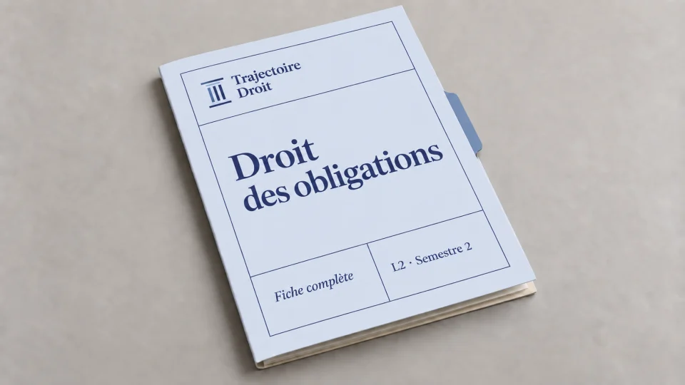

La responsabilité du fait des choses, la garde et le rôle actif
La chaudière d'un remorqueur explose et tue un ouvrier. Ailleurs, une voiture volée renverse un facteur, ou une plaque de toiture casse sous le poids d'un homme. L'article 1242 alinéa 1er du Code civil règle ces trois affaires avec le même mécanisme. Grâce à lui, la victime n'a pas à prouver une faute. Ce mécanisme repose sur deux conditions, la garde et le rôle actif de la chose. Quand un salarié blesse quelqu'un avec une machine de l'entreprise, c'est d'ailleurs l'employeur qui doit réparer le dommage, car il reste le gardien de la machine.

L'essentiel en une phrase
D'après l'article 1242, alinéa 1er du Code civil, on est responsable non seulement de ses propres actes, mais aussi du dommage causé par une chose qu'on a sous sa garde.
La victime d'un dommage causé par une chose (une machine, une voiture, un objet quelconque) n'a donc pas besoin de prouver que le gardien a commis une faute.
Elle doit seulement prouver deux choses. D'abord, la chose est intervenue de façon active dans le dommage. Ensuite, la personne poursuivie en avait la garde à ce moment-là. On parle de responsabilité de plein droit, parce qu'elle s'applique dès que ces deux conditions sont réunies, que le gardien ait commis une faute ou non.
Ce mécanisme revient dans une bonne partie des cas pratiques de responsabilité civile en L2. Le raisonnement se fait toujours en deux temps. On vérifie d'abord le rôle actif de la chose, puis la garde. La jurisprudence, ce sont les décisions de la Cour de cassation. Ces deux conditions viennent de la jurisprudence. Chacune a donc ses arrêts de référence à citer dans la copie.
L'article 1242 alinéa 1er s'applique quand deux conditions sont réunies en même temps. La chose doit avoir joué un rôle actif dans le dommage, et la personne poursuivie doit en avoir la garde au moment des faits. Le gardien est celui qui a l'usage, la direction et le contrôle de la chose, qu'il en soit propriétaire ou non. Quand un salarié utilise la chose pour son travail, c'est toujours l'employeur qui garde cette qualité.

Fiche complète
Droit de la responsabilité civile / des obligations L2 S2
La naissance du principe, de Teffaine à Jand'heur
En 1804, l'article 1384 alinéa 1er (devenu l'article 1242 alinéa 1er) n'était qu'une phrase de transition. Elle annonçait deux cas particuliers, à savoir la responsabilité du fait des animaux et celle du fait des bâtiments en ruine. Personne, à l'époque, n'imaginait qu'un principe général de responsabilité du fait des choses puisse en sortir.
Avec la révolution industrielle, les machines à vapeur se sont multipliées, et les accidents avec elles. Or la victime ne pouvait presque jamais prouver une faute précise, car elle n'avait aucun moyen de savoir ce qui s'était passé à l'intérieur de la machine qui l'avait blessée.
Dans ce contexte, la Cour de cassation rend l'arrêt Teffaine du 16 juin 1896, à propos d'un ouvrier tué par l'explosion de la chaudière d'un remorqueur à vapeur. Pour la première fois, elle oblige le propriétaire à réparer le dommage sans exiger la preuve d'une faute.
Pendant plus de trente ans, la jurisprudence hésite à étendre cette solution aux choses actionnées par la main de l'homme, comme une voiture conduite par son chauffeur.
L'arrêt Jand'heur du 13 février 1930 tranche enfin la question. Il a été rendu à propos d'une jeune fille mineure renversée par un camion. À l'époque, les Chambres réunies étaient la formation la plus solennelle de la Cour de cassation. La Cour de cassation a jugé l'affaire en Chambres réunies. La Cour affirme que la loi s'applique de la même façon, que la chose soit actionnée par la main de l'homme ou non. Depuis Jand'heur, l'article 1242 alinéa 1er couvre donc toute chose, sans exception de principe.
La garde de la chose, l'arrêt Franck
Le principe était posé, mais il fallait encore savoir qui était le gardien. Le plus souvent, le propriétaire et le détenteur de la chose sont la même personne, et la difficulté ne se pose pas. Elle surgit quand quelqu'un vole ou emprunte la chose.
Deux conceptions s'opposaient. Selon la garde juridique, le gardien est celui qui a un droit sur la chose, en général le propriétaire. Le propriétaire serait donc resté responsable même après un vol. Selon la garde matérielle, le gardien est celui qui tient réellement la chose en main au moment du dommage. Mais avec cette seconde conception, la victime n'a personne à qui demander réparation quand le voleur reste inconnu.
L'arrêt Franck
« Y…, dépossédé de sa voiture par l'effet du vol, se trouvait dans l'impossibilité d'exercer sur ladite voiture aucune surveillance […] privé de l'usage, de la direction et du contrôle de sa voiture, n'en avait plus la garde. »Cass. ch. réunies, 2 décembre 1941, Franck
Les faits sont restés célèbres. Le docteur Franck avait prêté sa voiture à son fils, alors mineur. Une nuit, un voleur resté inconnu la vole. Il renverse ensuite un facteur, qui meurt de l'accident.
La Cour de cassation aurait pu condamner le propriétaire au nom de la garde juridique. Elle retient au contraire la garde matérielle. Elle donne aussi la définition de la garde qui s'applique encore aujourd'hui. Le gardien est celui qui a l'usage, la direction et le contrôle de la chose, autrement dit celui qui s'en sert, décide de son emploi et peut la surveiller.
Au moment de l'accident, le voleur exerçait ces trois pouvoirs. Il était donc devenu le gardien à la place du propriétaire, à qui on avait pris la voiture.
Cette définition entraîne une conséquence utile en cas pratique. Le propriétaire d'une chose est seulement présumé gardien, parce qu'il exerce ces trois pouvoirs la plupart du temps. Le juge le considère donc comme gardien tant qu'il ne prouve pas le contraire. Il peut renverser cette présomption en prouvant qu'il a perdu ces pouvoirs, comme dans l'affaire Franck.
À l'inverse, un emprunteur ou un locataire qui a l'usage, la direction et le contrôle d'une chose en devient le gardien, même s'il n'en est pas propriétaire. Il doit alors réparer le dommage en tant que gardien.
Je détaille les faits complets et la portée de cette décision dans ma fiche sur l'arrêt Franck.
Le préposé n'est jamais gardien, même quand il tient la chose en main
Cette question revient souvent en cas pratique dès qu'un salarié est en cause. Le préposé est un salarié qui agit pour son employeur, dans le cadre de son travail. Le commettant est l'employeur qui lui donne les ordres. Quand le préposé manipule une chose de son commettant, il n'en devient jamais le gardien.
La deuxième chambre civile de la Cour de cassation l'a jugé dans un arrêt du 1er avril 1998. Elle s'est appuyée sur les trois pouvoirs définis par l'arrêt Franck. Le préposé a bien l'usage de la chose. Il la manie et la fait fonctionner.
Mais la direction reste au commettant, car c'est lui qui organise le travail et donne les consignes. Il garde aussi le contrôle, puisque lui seul peut imposer l'entretien de la machine et vérifier qu'elle respecte les règles de sécurité.
Prenons un ouvrier qui blesse un tiers avec une machine de l'entreprise, pendant son travail normal. La victime ne peut donc pas lui demander réparation sur le fondement du fait des choses. C'est l'employeur qui doit réparer le dommage, car il est le gardien de la machine. La règle s'applique même si le salarié tenait la machine en main au moment de l'accident.
Certains juristes trouvent un peu artificiel de séparer ainsi l'usage et la direction de la chose. La Cour de cassation garde pourtant cette solution, car elle protège le salarié. En effet, la victime ne peut pas le poursuivre personnellement sur ce fondement.
L'employeur peut aussi devoir réparer un dommage causé par son salarié sur un autre fondement. L'article 1242 alinéa 5 rend en effet le commettant responsable du dommage causé par son préposé. De son côté, l'immunité du préposé le met en principe à l'abri des poursuites de la victime. Les conditions de ce régime et cette immunité sont expliquées dans mon article sur la responsabilité des commettants du fait de leurs préposés.
Le gardien privé de discernement
Le discernement est la capacité de comprendre la portée de ses actes. Longtemps, la Cour de cassation a exigé du gardien la faculté de discernement.
Un enfant en bas âge ou une personne atteinte de troubles mentaux graves ne pouvait donc pas être qualifié de gardien. Pour la Cour, ces personnes ne pouvaient pas réellement exercer l'usage, la direction et le contrôle de la chose au sens juridique du terme.
L'exigence de discernement a disparu en deux étapes. D'abord, la Cour de cassation l'a écartée pour la personne atteinte de troubles mentaux, avec l'arrêt Trichard du 18 décembre 1964. La loi du 3 janvier 1968 a ensuite confirmé cette solution, aujourd'hui inscrite à l'article 414-3 du Code civil.
Cet article prévoit que celui qui cause un dommage sous l'effet d'un trouble mental doit quand même le réparer. Vingt ans plus tard, la Cour de cassation a écarté l'exigence de discernement pour l'enfant en bas âge, avec l'arrêt Gabillet du 9 mai 1984. L'Assemblée plénière est la formation la plus solennelle de la Cour de cassation, et c'est elle qui a rendu cet arrêt. Le même jour, elle a rendu les arrêts Fullenwarth, Lemaire et Derguini, qui portent eux aussi sur la responsabilité liée aux enfants.
Un enfant en bas âge peut donc être gardien d'une chose et répondre lui-même du dommage sur le fondement de l'article 1242 alinéa 1er, même s'il ne comprend pas ce qu'il fait. Dans l'affaire Gabillet, un enfant de trois ans tombe d'une balançoire avec un bâton à la main et crève l'œil d'un camarade. La cour d'appel déclare cet enfant lui-même responsable, et la Cour de cassation approuve cette décision. Ses parents peuvent ensuite répondre du dommage sur un autre fondement, l'article 1242 alinéa 4, qui prévoit la responsabilité des parents.
Tu révises la responsabilité civile en L2 ?
Tu peux recevoir gratuitement mon guide « Réviser le droit sans s'épuiser ». Mes élèves s'en servent pour répartir leurs révisions sur tout le semestre, et ils retiennent ainsi les grands arrêts jusqu'au jour du partiel.
La garde commune, quand plusieurs personnes se partagent la chose
Quand deux personnes exercent des pouvoirs différents sur une même chose, seule celle qui a réellement l'usage, la direction et le contrôle en est la gardienne. La situation change quand plusieurs personnes exercent, au même titre, les mêmes pouvoirs sur la chose.
La Cour de cassation parle alors de garde commune. Elle l'a reconnue dans un arrêt du 20 novembre 1968, entre deux joueurs de tennis qui servaient des balles d'essai avant un match.
Chaque joueur exerçait le même pouvoir sur la balle. Le joueur blessé était donc lui-même gardien de la balle, avec son partenaire. C'est pourquoi il ne pouvait pas invoquer l'article 1242 alinéa 1er contre lui.
La solution s'applique aussi entre deux groupes distincts, à condition que chacun exerce les mêmes pouvoirs à l'intérieur de son propre groupe. Un arrêt du 7 novembre 1988 l'a jugé pour un jeu d'enfants organisés en deux camps armés de flèches.
En revanche, la garde commune disparaît quand les pouvoirs exercés diffèrent. Un arrêt du 28 mars 2002 l'a ainsi refusée entre un joueur qui tenait une raquette de tennis et une victime blessée par cette raquette. La victime n'avait en effet aucun pouvoir sur la raquette.
Le rôle actif de la chose
La garde ne suffit pas à elle seule. Une chose joue un rôle actif quand elle est réellement la cause du dommage. Il faut aussi que la chose ait joué un rôle actif dans le dommage.
L'arrêt Dame Cadé du 19 février 1941 pose cette exigence. Dans cette affaire, une cliente d'un établissement de bains avait eu un malaise. Elle s'était effondrée sur un tuyau de chauffage et s'était brûlée à son contact.
La Cour de cassation refuse d'engager la responsabilité de l'établissement, parce que le tuyau était à sa place normale, en bon état, et n'avait rien fait d'autre que subir la chute de la victime.
L'exigence de rôle actif s'applique différemment selon que la chose était inerte ou en mouvement au moment des faits. Une chose inerte (immobile) est considérée comme l'instrument du dommage seulement si elle avait quelque chose d'anormal. La victime doit prouver cette anomalie, dans la position de la chose, son état ou son fonctionnement.
La Cour de cassation l'a rappelé en 1995. Dans cette affaire, un homme était monté sur un toit pour une expertise, et une plaque de toiture translucide s'était brisée sous son poids. Comme la plaque était à sa place et en bon état, la Cour a refusé d'y voir l'instrument du dommage, même si elle avait cédé sous le poids de l'homme.
Au contraire, une chose en mouvement qui entre en contact avec la victime bénéficie d'une présomption de rôle actif. Le juge considère donc qu'elle a causé le dommage, sauf preuve contraire. Un arrêt du 28 novembre 1984 a posé cette présomption. C'est alors au gardien de prouver que la chose a joué seulement un rôle passif, et il y parvient rarement.
Les régimes qui prennent le relais
L'article 1242 alinéa 1er reste un principe général. Pourtant, plusieurs régimes spéciaux s'appliquent à sa place quand leurs conditions sont réunies. Les animaux relèvent de l'article 1243, et les bâtiments en ruine de l'article 1244.
Un véhicule terrestre à moteur impliqué dans un accident de la circulation relève de la loi Badinter du 5 juillet 1985. Cette loi prévoit des règles propres à l'indemnisation des victimes de la route. Ces règles sont plus favorables aux victimes qu'un raisonnement classique sur la garde et le rôle actif.
Cette loi répond d'ailleurs directement à l'arrêt Desmares de 1982. Dans cet arrêt, la Cour de cassation avait jugé que seule la force majeure libérait le gardien de sa responsabilité. Une victime qui avait commis une faute était donc indemnisée en entier. Une fois la loi Badinter votée, la Cour est revenue sur cette solution par ses arrêts du 6 avril 1987. Depuis, en dehors des accidents de la circulation, la faute de la victime joue donc de deux façons. Une faute présente les caractères de la force majeure quand elle était imprévisible et irrésistible pour le gardien. Dans ce cas, elle le libère en totalité. S'il s'agit d'une simple faute, elle le libère seulement en partie. Le juge réduit alors l'indemnité de la victime selon la part que sa faute a prise dans le dommage. Pour un accident de la circulation, en revanche, ce sont les règles de la loi Badinter qui indiquent si la victime fautive est indemnisée, et dans quelle mesure.
Depuis la loi du 19 mai 1998, un produit défectueux relève d'un régime à part. Transposer une directive européenne, c'est l'intégrer en droit français. Cette loi transpose une directive européenne. Le régime rend responsable le producteur plutôt que le simple gardien. Il se trouve aujourd'hui aux articles 1245 et suivants du Code civil. Cette numérotation date de la réforme de 2016, car le texte de 1998 employait d'abord les articles 1386-1 et suivants.
Une dernière limite tient au corps humain. Le corps d'une personne n'est en principe pas une chose au sens de l'article 1242 alinéa 1er, parce que le droit distingue les personnes des choses depuis toujours.
Les juges ont pourtant admis, dans des cas particuliers, qu'une personne en mouvement puisse être traitée comme une chose qui cause le dommage. C'est le cas d'une collision entre skieurs. La frontière entre la personne et la chose reste donc discutée dans ces situations.
Utiliser ce raisonnement en cas pratique
Face à un dommage causé par un objet, il faut toujours suivre le même ordre. D'abord, on identifie la chose exacte qui a causé le dommage. Attention aux situations où plusieurs objets interviennent. Dans l'arrêt de 2002 vu plus haut, la victime avait été blessée par la raquette de l'autre joueur. Seule cette raquette était donc l'instrument du dommage.
Ensuite, on vérifie le rôle actif de la chose. Il faut alors distinguer si elle était inerte ou en mouvement au moment des faits, car la réponse indique qui doit apporter la preuve.
Enfin, il faut déterminer le gardien. Le point de départ est la présomption qui désigne le propriétaire. On vérifie ensuite si un événement l'a renversée, comme un vol ou un prêt. Si la chose était entre les mains d'un salarié, c'est l'employeur qui est le gardien.
Pour dérouler ce raisonnement en entier, avec la majeure, la mineure et la conclusion attendues d'une copie, ma page sur la méthode du cas pratique reprend chaque étape.
En L2, la responsabilité du fait des choses se révise avec les deux autres grands régimes de responsabilité civile. Il s'agit de la faute civile, qui engage chacun pour ses propres actes, et de la responsabilité du fait d'autrui, par exemple celle des parents pour leurs enfants. Je détaille ces régimes dans ma fiche de responsabilité civile L2.
Pour situer ce chapitre dans l'ensemble du programme de droit des obligations, semestre 1 et semestre 2, ma fiche de droit des obligations L2 reprend chaque notion avec ses arrêts. J'ai aussi rassemblé le programme entier et l'ordre de révision conseillé dans ma page comment réviser le droit des obligations L2.
Les erreurs à éviter
- Confondre propriétaire et gardien. Le propriétaire n'est que présumé gardien. Un vol ou un prêt peut transférer la garde à quelqu'un d'autre, et un salarié laisse toujours la garde à son employeur. Une copie qui s'arrête au propriétaire passe donc à côté de la question de la garde.
- Oublier que le préposé n'est jamais gardien. Un salarié qui utilise une chose de l'entreprise dans l'exercice de ses fonctions n'engage pas sa propre responsabilité sur ce fondement. Seul son employeur doit réparer le dommage.
- Sauter l'étape du rôle actif. La garde ne suffit jamais seule. Sans rôle actif de la chose, l'article 1242 alinéa 1er ne s'applique pas. Ce rôle actif doit être prouvé si la chose était inerte, et il est présumé si elle était en mouvement.
- Appliquer le principe général alors qu'un régime spécial s'impose. Un accident de la route, un produit défectueux ou un animal relèvent d'un régime propre. Il faut donc vérifier ces régimes avant de raisonner sur la garde et le rôle actif.
Questions fréquentes
Qu'est-ce que la responsabilité du fait des choses ?
Qui est le gardien d'une chose ?
Un préposé peut-il être gardien de la chose de son employeur ?
Qu'est-ce que le rôle actif de la chose ?

Le Pack Ultra L2 S2 réunit les 32 ressources de ton second semestre de L2 pour 199 €. On y trouve la fiche de droit des obligations L2. Voir le contenu du pack →